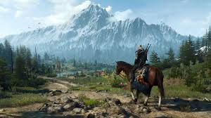
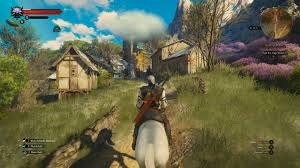

The Witcher 3: Wild Hunt - Complete Edition (Next-Gen) es una versión mejorada de The Witcher 3: Wild Hunt, uno de los videojuegos de rol más aclamados de todos los tiempos, desarrollado por CD Projekt Red. Esta edición incluye mejoras gráficas y de rendimiento para las consolas de nueva generación, como la PlayStation 5 y Xbox Series X/S, además de todo el contenido adicional lanzado anteriormente, como expansiones y misiones.
¿De qué trata The Witcher 3: Wild Hunt?
La historia de The Witcher 3 sigue a Geralt de Rivia, un Witcher (un cazador de monstruos mutado y entrenado para eliminar criaturas peligrosas) en su búsqueda de su hija adoptiva, Ciri, quien está siendo perseguida por la Cacería Salvaje (Wild Hunt), una misteriosa fuerza sobrenatural. La trama se centra en Geralt mientras intenta proteger a Ciri y descubrir los secretos detrás de la Cacería Salvaje, pero también explora temas de lealtad, familia, amor y sacrificio.
El juego transcurre en un mundo vasto y detallado lleno de monstruos, facciones y personajes complejos, lo que le otorga una gran riqueza narrativa. Además de la historia principal, los jugadores pueden embarcarse en un sinfín de misiones secundarias que enriquecen la experiencia y proporcionan historias interesantes de todo tipo.
 